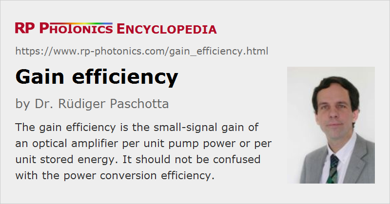

Gain Efficiency
Definition: small-signal gain of an optical amplifier per unit pump power or per unit stored energy
German: Verstärkungseffizienz
Categories: lasers, optical amplifiers
Units: dB/W, 1/W
How to cite the article; suggest additional literature
Author: Dr. Rüdiger Paschotta
The gain efficiency of an amplifier can be defined as the small-signal gain divided by the pump power required to achieve this gain in the steady state. For three-level gain media, it is more sensible to use the differential gain efficiency, i.e. the derivative of the small-signal gain with respect to the pump power. The gain efficiency may also sometimes refer to the stored energy instead of the pump power.
For a gain medium with emission and absorption cross sections σem and σabs and photon energy h ν at the signal wavelength, and a mode area A (assuming a flat-top profile), the dependence of the gain on the stored energy can be simply calculated as
where the power amplification factor is exp(g). (For a four-level gain medium, σabs = 0.) This shows that the gain efficiency in terms of stored energy is inversely related to the saturation energy: high laser cross sections lead to a high gain efficiency, but also to a low saturation energy.
The pump power required for achieving a certain stored energy in the steady state depends on the upper-state lifetime of the laser transition: the shorter this lifetime, the higher is the rate with which ions needs to be pumped into the upper laser level. For the differential gain efficiency in terms of pump power, this leads to the equation
where ηp is the pump efficiency, including the pump absorption efficiency, the quantum efficiency of the pumping process, and the quantum defect. Psat is the saturation power, which is the saturation energy divided by the upper-state lifetime.
Fiber amplifiers with small effective mode area can easily reach differential gain efficiencies of several dB/mW, with special optimization even more than 10 dB/mW. A high gain efficiency can be desirable for an amplifier when a high gain is wanted. However, it can be preferable to have a not too large gain efficiency in cases where a high energy needs to be stored in a gain medium – for example for Q switching of a laser, or if pulses need to be amplified to high energies.
The gain efficiency should not be confused with the power conversion efficiency. For example, an optical amplifier based on a laser crystal may have a low gain efficiency (due to a large mode area) but nevertheless a high power conversion efficiency.
Questions and Comments from Users
Here you can submit questions and comments. As far as they get accepted by the author, they will appear above this paragraph together with the author’s answer. The author will decide on acceptance based on certain criteria. Essentially, the issue must be of sufficiently broad interest.
Please do not enter personal data here; we would otherwise delete it soon. (See also our privacy declaration.) If you wish to receive personal feedback or consultancy from the author, please contact him e.g. via e-mail.
By submitting the information, you give your consent to the potential publication of your inputs on our website according to our rules. (If you later retract your consent, we will delete those inputs.) As your inputs are first reviewed by the author, they may be published with some delay.
See also: gain, saturation energy, optical amplifiers, The Photonics Spotlight 2007-05-10
and other articles in the categories lasers, optical amplifiers
|  |
If you like this page, please share the link with your friends and colleagues, e.g. via social media:
These sharing buttons are implemented in a privacy-friendly way!